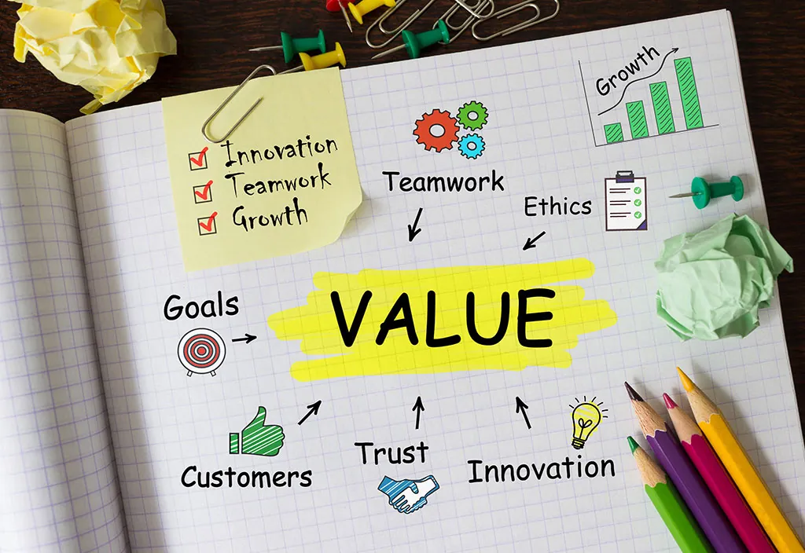

Wer etwas neu aufstellen möchte, benötigt ein stabiles Fundament. Viele Veränderungsprozesse in Unternehmen sind angetrieben durch technologische Innovationen. Und in vielen Branchen hat das Tempo des Wandels geradezu atemberaubende Züge angenommen. Künstliche Intelligenz und lernende Maschinen werden diese Entwicklung weiter beschleunigen. Organisationen begegnen dieser Herausforderung mit neuen technischen Lösungen für Produktion, Vertrieb oder Kommunikation. Und mit neuen agilen Methoden der Zusammenarbeit. Doch auf welchem Fundament wird dieser Wandel vollzogen?

Eine Neubestimmung der eigenen Leitwerte ist bei diesem Prozess unerlässlich. Ein Unternehmen kann sich nur erfolgreich neu gestalten, wenn klar definiert ist, in welchen Wertekoordinaten sich diese Veränderung bewegt. So kann die Einführung einer neuer Methode zur Erhöhung der Eigenverantwortung und Planung in agilen Projekten nicht gelingen, wenn sich das Wertesystem eines Unternehmen nicht von Micromanagement und Kontrolldominanz befreit und stattdessen hinwendet zu Werten wie Vertrauen und größerer Gleichberechtigung.Und Innovationen können nur dynamisch entwickelt werden, wenn der Mut zu Fehlentwicklungen nicht nur toleriert sondern vielleicht sogar eingefordert wird. Wer mit evolutionären Ansätzen Lösungen für eine sich ständig verändernde Welt entwickeln möchte, muss das spielerische Scheitern tief in die eigene Unternehmens-DNA verankern. Alte prozessgetriebene Werte wie Fehlervermeidung stehen hier im Widerspruch - und schaffen nicht das Klima, im dem neue Lösungen gedeihen können.
Erfolgreich Veränderungsprozesse gestalten
Schließlich gehört auch ein neues Verständnis von Veränderungsbereitschaft zu den Schlüsselwerten für Unternehmen, die sich erfolgreich in Zeiten der Digitalisierung behaupten wollen. Oft wird Tradition mit dem Festhalten an alten Verfahren und Methoden verwechselt. Wenn Führungskräfte Innovationen verordnen, selbst aber nur an gewohnten Strukturen festhalten aus Angst, Macht und Kontrolle zu verlieren, sind Veränderungen zum Scheitern verurteilt.
Wir analysieren mit Ihnen das bestehende Wertesystem Ihrer Organisation und prüfen für Sie, wo Veränderungsbedarf besteht. Gemeinsam mit Ihnen und Ihren Mitarbeitern entwickeln wir neue Leitwerte für die Gestaltung Ihrer Zukunft. Damit Sie das richtige Fundament finden, auf dem Sie die Neuausrichtung Ihres Unternehmens erfolgreich planen und gestalten können.
Sie haben Fragen zur Neuausrichtung von Unternehmenswerten?
Schreiben Sie uns oder rufen Sie uns an:
Markus Friedrichs